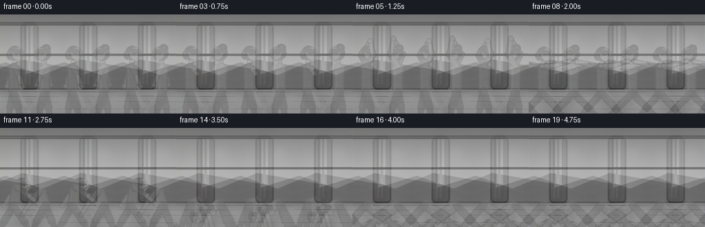
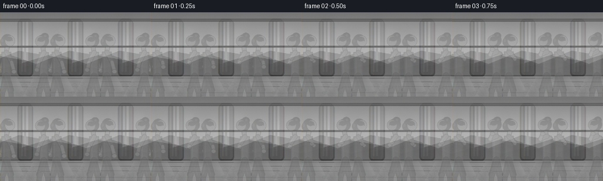
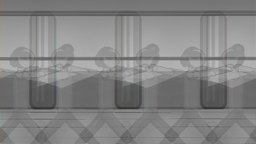
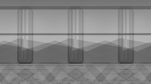
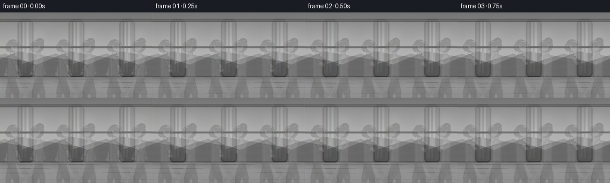
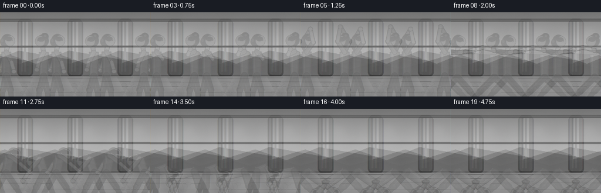

CODING AGENTS AS PIXEL WORLD MODELS
traex/DeepSeek-V4.1-Flash · instance_preservation_0031
点击播放 · 原生 RGB 像素
逐轮保存的候选
回放视频、检查图与代码变化。
每份候选均可单独播放。实际图片检查记录在下方工具轨迹中。
候选 01播放与检查图
点击播放 · 原生 RGB 像素

展开代码变化
--- 上一保存版本
+++ 本次保存版本
@@ -0,0 +1,729 @@
+from pathlib import Path
+import math
+
+import numpy as np
+from PIL import Image, ImageDraw, ImageFilter
+
+from artifact_io import save
+
+
+CASE_DIR = Path(__file__).resolve().parent
+W, H = 256, 144
+SS = 4
+RW, RH = W * SS, H * SS
+FRAMES = 20
+FPS = 4
+GROUND_Y = 120.0
+
+
+def rgb(value):
+ return tuple(value)
+
+
+def mix(a, b, t):
+ return tuple(int(round(a[i] * (1.0 - t) + b[i] * t)) for i in range(3))
+
+
+def smoothstep(t):
+ t = max(0.0, min(1.0, t))
+ return t * t * (3.0 - 2.0 * t)
+
+
+def lerp_point(a, b, t):
+ return (a[0] * (1.0 - t) + b[0] * t, a[1] * (1.0 - t) + b[1] * t)
+
+
+def gradient_image(width, height, stops):
+ y = np.linspace(0.0, 1.0, height)
+ colors = np.zeros((height, 3), dtype=np.float32)
+ for index in range(len(stops) - 1):
+ p0, c0 = stops[index]
+ p1, c1 = stops[index + 1]
+ mask = (y >= p0) & (y <= p1)
+ local = (y[mask] - p0) / max(1e-6, p1 - p0)
+ for channel in range(3):
+ colors[mask, channel] = c0[channel] * (1.0 - local) + c1[channel] * local
+ colors[y < stops[0][0]] = stops[0][1]
+ colors[y > stops[-1][0]] = stops[-1][1]
+ arr = np.repeat(colors[:, None, :], width, axis=1).astype(np.uint8)
+ return Image.fromarray(arr, "RGB")
+
+
+def scale_point(point):
+ return (int(round(point[0] * SS)), int(round(point[1] * SS)))
+
+
+def capsule(draw, p1, p2, width, fill, outline=None, outline_width=0.0):
+ a = scale_point(p1)
+ b = scale_point(p2)
+ w = max(1, int(round(width * SS)))
+ ow = max(0, int(round(outline_width * SS)))
+ if outline is not None and ow:
+ draw.line([a, b], fill=outline, width=w + 2 * ow, joint="curve")
+ for point in (a, b):
+ radius = w / 2.0 + ow
+ draw.ellipse(
+ [point[0] - radius, point[1] - radius, point[0] + radius, point[1] + radius],
+ fill=outline,
+ )
+ draw.line([a, b], fill=fill, width=w, joint="curve")
+ for point in (a, b):
+ radius = w / 2.0
+ draw.ellipse(
+ [point[0] - radius, point[1] - radius, point[0] + radius, point[1] + radius],
+ fill=fill,
+ )
+
+
+def ellipse(draw, center, radius_x, radius_y, fill, outline=None, outline_width=0.0):
+ cx, cy = scale_point(center)
+ rx = radius_x * SS
+ ry = radius_y * SS
+ if outline is not None and outline_width:
+ ow = outline_width * SS
+ draw.ellipse([cx - rx - ow, cy - ry - ow, cx + rx + ow, cy + ry + ow], fill=outline)
+ draw.ellipse([cx - rx, cy - ry, cx + rx, cy + ry], fill=fill)
+
+
+def polygon(draw, points, fill, outline=None, outline_width=0.0):
+ pts = [scale_point(point) for point in points]
+ draw.polygon(pts, fill=fill)
+ if outline is not None and outline_width:
+ draw.line(pts + [pts[0]], fill=outline, width=max(1, int(round(outline_width * SS))), joint="curve")
+
+
+def perpendicular(a, b):
+ dx, dy = b[0] - a[0], b[1] - a[1]
+ length = math.hypot(dx, dy) or 1.0
+ return (-dy / length, dx / length)
+
+
+def torso_polygon(hip, shoulder, hip_width, shoulder_width):
+ nx, ny = perpendicular(hip, shoulder)
+ return [
+ (shoulder[0] + nx * shoulder_width * 0.5, shoulder[1] + ny * shoulder_width * 0.5),
+ (shoulder[0] - nx * shoulder_width * 0.5, shoulder[1] - ny * shoulder_width * 0.5),
+ (hip[0] - nx * hip_width * 0.5, hip[1] - ny * hip_width * 0.5),
+ (hip[0] + nx * hip_width * 0.5, hip[1] + ny * hip_width * 0.5),
+ ]
+
+
+MOUNTAIN = {
+ "hip": (0.0, -36.0),
+ "shoulder": (0.0, -64.0),
+ "neck": (1.0, -69.0),
+ "head": (3.0, -78.0),
+ "elbow_b": (-4.0, -53.0),
+ "hand_b": (-7.0, -42.0),
+ "elbow_f": (6.0, -52.0),
+ "hand_f": (9.0, -41.0),
+ "knee_b": (-4.0, -19.0),
+ "ankle_b": (-6.0, -1.0),
+ "toe_b": (2.0, -1.0),
+ "knee_f": (5.0, -19.0),
+ "ankle_f": (7.0, -1.0),
+ "toe_f": (15.0, -1.0),
+}
+
+PRAYER = {
+ **MOUNTAIN,
+ "elbow_b": (-4.0, -55.0),
+ "hand_b": (4.0, -56.0),
+ "elbow_f": (7.0, -54.0),
+ "hand_f": (4.5, -57.0),
+}
+
+OVERHEAD = {
+ **MOUNTAIN,
+ "elbow_b": (-6.0, -77.0),
+ "hand_b": (4.0, -93.0),
+ "elbow_f": (8.0, -77.0),
+ "hand_f": (4.5, -94.0),
+}
+
+WARRIOR = {
+ "hip": (0.0, -34.0),
+ "shoulder": (0.0, -63.0),
+ "neck": (1.0, -69.0),
+ "head": (3.0, -77.0),
+ "elbow_b": (-18.0, -63.0),
+ "hand_b": (-36.0, -63.0),
+ "elbow_f": (18.0, -63.0),
+ "hand_f": (36.0, -63.0),
+ "knee_b": (-18.0, -17.0),
+ "ankle_b": (-34.0, -1.0),
+ "toe_b": (-26.0, -1.0),
+ "knee_f": (18.0, -17.0),
+ "ankle_f": (34.0, -1.0),
+ "toe_f": (42.0, -1.0),
+}
+
+FORWARD_FOLD = {
+ "hip": (0.0, -37.0),
+ "shoulder": (8.0, -48.0),
+ "neck": (12.0, -44.0),
+ "head": (18.0, -39.0),
+ "elbow_b": (10.0, -28.0),
+ "hand_b": (15.0, -8.0),
+ "elbow_f": (16.0, -29.0),
+ "hand_f": (20.0, -9.0),
+ "knee_b": (-3.0, -19.0),
+ "ankle_b": (-7.0, -1.0),
+ "toe_b": (1.0, -1.0),
+ "knee_f": (5.0, -19.0),
+ "ankle_f": (8.0, -1.0),
+ "toe_f": (16.0, -1.0),
+}
+
+DOWNWARD_DOG = {
+ "hip": (0.0, -36.0),
+ "shoulder": (24.0, -20.0),
+ "neck": (28.0, -16.0),
+ "head": (33.0, -11.0),
+ "elbow_b": (31.0, -10.0),
+ "hand_b": (38.0, -1.0),
+ "elbow_f": (33.0, -10.0),
+ "hand_f": (40.0, -1.0),
+ "knee_b": (-17.0, -19.0),
+ "ankle_b": (-34.0, -1.0),
+ "toe_b": (-26.0, -1.0),
+ "knee_f": (-15.0, -19.0),
+ "ankle_f": (-32.0, -1.0),
+ "toe_f": (-24.0, -1.0),
+}
+
+POSE_KEYS = [
+ (0.0, MOUNTAIN),
+ (2.5, PRAYER),
+ (5.5, OVERHEAD),
+ (9.0, WARRIOR),
+ (13.0, FORWARD_FOLD),
+ (16.0, DOWNWARD_DOG),
+ (19.0, DOWNWARD_DOG),
+]
+
+
+def pose_at(t, phase):
+ t = max(POSE_KEYS[0][0], min(POSE_KEYS[-1][0], t + phase))
+ for index in range(len(POSE_KEYS) - 1):
+ t0, p0 = POSE_KEYS[index]
+ t1, p1 = POSE_KEYS[index + 1]
+ if t0 <= t <= t1:
+ u = smoothstep((t - t0) / max(1e-6, t1 - t0))
+ pose = {key: lerp_point(p0[key], p1[key], u) for key in p0}
+ breath = 0.35 * math.sin((t / 5.5) * math.tau + phase)
+ sway = 0.25 * math.sin((t / 6.5) * math.tau + phase * 0.6)
+ for key in ("hip", "shoulder", "neck", "head", "elbow_b", "elbow_f"):
+ x, y = pose[key]
+ pose[key] = (x + sway, y + breath)
+ return pose
+ return dict(POSE_KEYS[-1][1])
+
+
+def make_background():
+ wall = gradient_image(
+ RW,
+ RH,
+ [
+ (0.00, (91, 116, 113)),
+ (0.38, (137, 151, 140)),
+ (0.60, (216, 201, 178)),
+ (1.00, (225, 211, 190)),
+ ],
+ )
+ image = wall.convert("RGBA")
+ draw = ImageDraw.Draw(image, "RGBA")
+
+ frame_box = [24 * SS, 8 * SS, 232 * SS, 80 * SS]
+ draw.rounded_rectangle(
+ [frame_box[0] - 2 * SS, frame_box[1] + 2 * SS, frame_box[2] + 2 * SS, frame_box[3] + 2 * SS],
+ radius=5 * SS,
+ fill=(33, 49, 49, 65),
+ )
+ draw.rounded_rectangle(frame_box, radius=4 * SS, fill=(53, 70, 68, 255))
+ draw.rounded_rectangle(
+ [frame_box[0] + SS, frame_box[1] + SS, frame_box[2] - SS, frame_box[3] - SS],
+ radius=2 * SS,
+ fill=(37, 52, 52, 255),
+ )
+
+ sky = gradient_image(
+ 200 * SS,
+ 68 * SS,
+ [
+ (0.00, (111, 154, 168)),
+ (0.45, (178, 184, 170)),
+ (0.78, (238, 185, 129)),
+ (1.00, (246, 153, 95)),
+ ],
+ ).convert("RGBA")
+ image.paste(sky, (28 * SS, 12 * SS))
+
+ sun_layer = Image.new("RGBA", (RW, RH), (0, 0, 0, 0))
+ sun = ImageDraw.Draw(sun_layer, "RGBA")
+ for radius, alpha in ((24, 20), (18, 30), (12, 55), (7, 135)):
+ sun.ellipse(
+ [
+ (176 - radius) * SS,
+ (28 - radius) * SS,
+ (176 + radius) * SS,
+ (28 + radius) * SS,
+ ],
+ fill=(255, 224, 160, alpha),
+ )
+ sun_layer = sun_layer.filter(ImageFilter.GaussianBlur(2.5 * SS))
+ image.alpha_composite(sun_layer)
+ draw = ImageDraw.Draw(image, "RGBA")
+
+ draw.polygon(
+ [
+ (28 * SS, 65 * SS),
+ (70 * SS, 52 * SS),
+ (110 * SS, 66 * SS),
+ (152 * SS, 49 * SS),
+ (228 * SS, 62 * SS),
+ (228 * SS, 80 * SS),
+ (28 * SS, 80 * SS),
+ ],
+ fill=(75, 107, 97, 95),
+ )
+ draw.polygon(
+ [
+ (28 * SS, 70 * SS),
+ (83 * SS, 60 * SS),
+ (127 * SS, 73 * SS),
+ (183 * SS, 58 * SS),
+ (228 * SS, 68 * SS),
+ (228 * SS, 80 * SS),
+ (28 * SS, 80 * SS),
+ ],
+ fill=(55, 85, 78, 120),
+ )
+ for x in (92, 160):
+ draw.rectangle([x * SS - 1.2 * SS, 12 * SS, x * SS + 1.2 * SS, 76 * SS], fill=(58, 74, 72, 255))
+ draw.rectangle([28 * SS, 44 * SS - 1.2 * SS, 228 * SS, 44 * SS + 1.2 * SS], fill=(58, 74, 72, 255))
+ draw.line(
+ [frame_box[0] + 2 * SS, frame_box[1] + 2 * SS, frame_box[2] - 2 * SS, frame_box[1] + 2 * SS],
+ fill=(126, 143, 133, 110),
+ width=SS,
+ )
+
+ floor_top = 82 * SS
+ floor = gradient_image(
+ RW,
+ RH - floor_top,
+ [
+ (0.00, (151, 111, 80)),
+ (0.28, (127, 88, 64)),
+ (0.68, (101, 68, 52)),
+ (1.00, (79, 52, 43)),
+ ],
+ ).convert("RGBA")
+ mask = Image.new("L", (RW, RH), 0)
+ mask_draw = ImageDraw.Draw(mask)
+ mask_draw.polygon([(0, floor_top), (RW, floor_top), (RW, RH), (0, RH)], fill=255)
+ image.paste(floor, (0, floor_top), mask.crop((0, floor_top, RW, RH)))
+ draw = ImageDraw.Draw(image, "RGBA")
+
+ horizon = 82.0
+ board_rows = [84, 89, 95, 103, 113, 126, 140]
+ for row in board_rows:
+ draw.line(
+ [(0, row * SS), (RW, row * SS)],
+ fill=(61, 37, 31, 92),
+ width=max(1, int(0.55 * SS)),
+ )
+ vanish = (128.0, horizon)
+ for bottom_x in (14, 52, 91, 128, 165, 204, 242):
+ draw.line(
+ [scale_point(vanish), scale_point((bottom_x, H))],
+ fill=(65, 40, 33, 54),
+ width=max(1, int(0.45 * SS)),
+ )
+ draw.polygon(
+ [(43 * SS, 82 * SS), (213 * SS, 82 * SS), (245 * SS, 144 * SS), (10 * SS, 144 * SS)],
+ fill=(255, 207, 145, 18),
+ )
+
+ reflection = Image.new("RGBA", (RW, RH), (0, 0, 0, 0))
+ reflection_draw = ImageDraw.Draw(reflection, "RGBA")
+ reflection_draw.polygon(
+ [(55 * SS, 82 * SS), (199 * SS, 82 * SS), (231 * SS, 132 * SS), (23 * SS, 132 * SS)],
+ fill=(255, 213, 157, 28),
+ )
+ reflection = reflection.filter(ImageFilter.GaussianBlur(5 * SS))
+ image.alpha_composite(reflection)
+
+ light = Image.new("RGBA", (RW, RH), (0, 0, 0, 0))
+ light_draw = ImageDraw.Draw(light, "RGBA")
+ for offset, alpha in ((0, 20), (18, 13), (38, 9)):
+ light_draw.polygon(
+ [
+ ((58 + offset) * SS, 12 * SS),
+ ((88 + offset) * SS, 12 * SS),
+ ((148 + offset) * SS, 118 * SS),
+ ((112 + offset) * SS, 122 * SS),
+ ],
+ fill=(255, 225, 170, alpha),
+ )
+ light = light.filter(ImageFilter.GaussianBlur(4 * SS))
+ image.alpha_composite(light)
+
+ draw = ImageDraw.Draw(image, "RGBA")
+ pot_x, pot_y = 236.0, 111.0
+ draw.polygon(
+ [
+ ((pot_x - 8) * SS, (pot_y + 2) * SS),
+ ((pot_x + 8) * SS, (pot_y + 2) * SS),
+ ((pot_x + 6) * SS, (pot_y + 15) * SS),
+ ((pot_x - 6) * SS, (pot_y + 15) * SS),
+ ],
+ fill=(126, 78, 61, 255),
+ outline=(75, 47, 40, 255),
+ )
+ for angle, length in ((-2.8, 15), (-2.3, 20), (-1.8, 17), (-1.2, 13), (2.8, 14)):
+ end = (pot_x + math.cos(angle) * length, pot_y - 3 + math.sin(angle) * length)
+ draw.line(
+ [scale_point((pot_x, pot_y - 1)), scale_point(end)],
+ fill=(57, 91, 68, 255),
+ width=max(1, int(1.0 * SS)),
+ )
+ ellipse(draw, end, 2.8, 1.7, (74, 112, 76, 255), (45, 73, 51, 255), 0.5)
+
+ return image
+
+
+def draw_mats(image):
+ draw = ImageDraw.Draw(image, "RGBA")
+ mats = [
+ (79.0, (181, 103, 82), (138, 72, 61), (214, 139, 113)),
+ (177.0, (103, 136, 111), (73, 102, 84), (143, 173, 146)),
+ ]
+ for center_x, fill, edge, highlight in mats:
+ back_y, front_y = 115.0, 127.0
+ back_half, front_half = 38.0, 48.0
+ draw.polygon(
+ [
+ ((center_x - back_half) * SS, (back_y + 2.0) * SS),
+ ((center_x + back_half) * SS, (back_y + 2.0) * SS),
+ ((center_x + front_half) * SS, (front_y + 2.0) * SS),
+ ((center_x - front_half) * SS, (front_y + 2.0) * SS),
+ ],
+ fill=edge,
+ )
+ draw.polygon(
+ [
+ ((center_x - back_half) * SS, back_y * SS),
+ ((center_x + back_half) * SS, back_y * SS),
+ ((center_x + front_half) * SS, front_y * SS),
+ ((center_x - front_half) * SS, front_y * SS),
+ ],
+ fill=fill,
+ )
+ draw.line(
+ [
+ scale_point((center_x - back_half + 2.0, back_y + 0.8)),
+ scale_point((center_x + back_half - 2.0, back_y + 0.8)),
+ ],
+ fill=highlight,
+ width=max(1, int(0.8 * SS)),
+ )
+ for offset in (-24, -12, 0, 12, 24):
+ draw.line(
+ [
+ scale_point((center_x + offset, back_y + 1.0)),
+ scale_point((center_x + offset * 1.12, front_y - 1.0)),
+ ],
+ fill=(*edge, 48),
+ width=max(1, int(0.35 * SS)),
+ )
+ draw.line(
+ [
+ scale_point((center_x - front_half + 2.0, front_y - 0.4)),
+ scale_point((center_x + front_half - 2.0, front_y - 0.4)),
+ ],
+ fill=highlight,
+ width=max(1, int(0.55 * SS)),
+ )
+ return image
+
+
+def draw_shadows(image):
+ shadow = Image.new("RGBA", (RW, RH), (0, 0, 0, 0))
+ draw = ImageDraw.Draw(shadow, "RGBA")
+ for center_x in (79.0, 177.0):
+ draw.polygon(
+ [
+ ((center_x - 15) * SS, 117 * SS),
+ ((center_x + 18) * SS, 118 * SS),
+ ((center_x + 58) * SS, 128 * SS),
+ ((center_x + 44) * SS, 133 * SS),
+ ((center_x - 10) * SS, 124 * SS),
+ ],
+ fill=(48, 30, 26, 66),
+ )
+ draw.ellipse(
+ [
+ (center_x - 23) * SS,
+ 119 * SS,
+ (center_x + 23) * SS,
+ 127 * SS,
+ ],
+ fill=(40, 26, 24, 64),
+ )
+ shadow = shadow.filter(ImageFilter.GaussianBlur(3.2 * SS))
+ image.alpha_composite(shadow)
+ return image
+
+
+def transformed_pose(pose, anchor_x, direction):
+ return {
+ key: (anchor_x + direction * point[0], GROUND_Y + point[1])
+ for key, point in pose.items()
+ }
+
+
+def draw_arm(draw, shoulder, elbow, hand, colors, back=False):
+ sleeve = colors["sleeve_back"] if back else colors["sleeve"]
+ sleeve_light = colors["sleeve_light"]
+ skin = colors["skin_back"] if back else colors["skin"]
+ skin_light = colors["skin_light"]
+ outline = colors["outline"]
+ capsule(draw, shoulder, elbow, 5.0, sleeve, outline, 0.75)
+ capsule(draw, elbow, hand, 3.9, skin, outline, 0.65)
+ ellipse(draw, hand, 2.55, 2.25, skin, outline, 0.55)
+
+ dx, dy = elbow[0] - shoulder[0], elbow[1] - shoulder[1]
+ length = math.hypot(dx, dy) or 1.0
+ nx, ny = -dy / length, dx / length
+ highlight_start = (shoulder[0] + nx * 1.25, shoulder[1] + ny * 1.25)
+ highlight_end = (elbow[0] + nx * 1.0, elbow[1] + ny * 1.0)
+ draw.line(
+ [scale_point(highlight_start), scale_point(highlight_end)],
+ fill=sleeve_light,
+ width=max(1, int(0.65 * SS)),
+ )
+ draw.line(
+ [scale_point((elbow[0], elbow[1] - 0.4)), scale_point((hand[0], hand[1] - 0.3))],
+ fill=skin_light,
+ width=max(1, int(0.45 * SS)),
+ )
+
+
+def draw_leg(draw, hip, knee, ankle, toe, colors, back=False):
+ leg = colors["legging_back"] if back else colors["legging"]
+ leg_light = colors["legging_light"]
+ skin = colors["skin_back"] if back else colors["skin"]
+ outline = colors["outline"]
+ capsule(draw, hip, knee, 6.9, leg, outline, 0.8)
+ capsule(draw, knee, ankle, 5.3, leg, outline, 0.7)
+ capsule(draw, ankle, toe, 3.1, skin, outline, 0.55)
+ ellipse(draw, toe, 2.3, 1.7, skin, outline, 0.45)
+
+ dx, dy = knee[0] - hip[0], knee[1] - hip[1]
+ length = math.hypot(dx, dy) or 1.0
+ nx, ny = -dy / length, dx / length
+ draw.line(
+ [
+ scale_point((hip[0] + nx * 1.4, hip[1] + ny * 1.4)),
+ scale_point((knee[0] + nx * 1.2, knee[1] + ny * 1.2)),
+ ],
+ fill=leg_light,
+ width=max(1, int(0.55 * SS)),
+ )
+
+
+def draw_figure(image, pose, anchor_x, direction, colors, hair_style):
+ draw = ImageDraw.Draw(image, "RGBA")
+ shoulder = pose["shoulder"]
+ hip = pose["hip"]
+ neck = pose["neck"]
+ head = pose["head"]
+ outline = colors["outline"]
+
+ draw_arm(draw, shoulder, pose["elbow_b"], pose["hand_b"], colors, back=True)
+ draw_leg(draw, hip, pose["knee_b"], pose["ankle_b"], pose["toe_b"], colors, back=True)
+
+ body = torso_polygon(hip, shoulder, 10.5, 12.0)
+ polygon(draw, body, colors["top"], outline, 0.9)
+ nx, ny = perpendicular(hip, shoulder)
+ draw.line(
+ [
+ scale_point((shoulder[0] - nx * 3.0, shoulder[1] - ny * 3.0)),
+ scale_point((hip[0] - nx * 2.5, hip[1] - ny * 2.5)),
+ ],
+ fill=colors["top_light"],
+ width=max(1, int(0.8 * SS)),
+ )
+ draw.line(
+ [
+ scale_point((shoulder[0] + nx * 4.2, shoulder[1] + ny * 4.2)),
+ scale_point((hip[0] + nx * 3.8, hip[1] + ny * 3.8)),
+ ],
+ fill=colors["top_shadow"],
+ width=max(1, int(0.7 * SS)),
+ )
+
+ waist_a = (hip[0] + nx * 5.5, hip[1] + ny * 5.5)
+ waist_b = (hip[0] - nx * 5.5, hip[1] - ny * 5.5)
+ draw.line([scale_point(waist_a), scale_point(waist_b)], fill=colors["legging"], width=max(1, int(2.0 * SS)))
+ draw.line(
+ [scale_point((waist_a[0], waist_a[1] - 0.6)), scale_point((waist_b[0], waist_b[1] - 0.6))],
+ fill=colors["legging_light"],
+ width=max(1, int(0.5 * SS)),
+ )
+
+ capsule(draw, shoulder, neck, 4.4, colors["skin"], outline, 0.65)
+
+ back_hair = (head[0] - direction * 2.0, head[1] + 0.3)
+ ellipse(draw, back_hair, 7.2, 7.5, colors["hair"], outline, 0.55)
+ if hair_style == "ponytail":
+ tail_center = (head[0] - direction * 7.3, head[1] + 2.2)
+ ellipse(draw, tail_center, 3.5, 5.0, colors["hair"], outline, 0.45)
+ ellipse(
+ draw,
+ (tail_center[0] - direction * 1.2, tail_center[1] - 1.8),
+ 1.5,
+ 2.1,
+ colors["hair_light"],
+ )
+ else:
+ bun_center = (head[0] - direction * 4.4, head[1] - 5.2)
+ ellipse(draw, bun_center, 4.5, 4.2, colors["hair"], outline, 0.5)
+ ellipse(
+ draw,
+ (bun_center[0] - direction * 0.8, bun_center[1] - 1.0),
+ 1.6,
+ 1.4,
+ colors["hair_light"],
+ )
+
+ face = (head[0] + direction * 1.4, head[1] + 0.8)
+ ellipse(draw, face, 5.8, 6.5, colors["skin"], outline, 0.5)
+ ellipse(
+ draw,
+ (face[0] - direction * 1.3, face[1] - 2.5),
+ 4.5,
+ 3.0,
+ colors["hair"],
+ )
+ draw.polygon(
+ [
+ scale_point((face[0] + direction * 5.3, face[1] - 0.3)),
+ scale_point((face[0] + direction * 7.1, face[1] + 1.2)),
+ scale_point((face[0] + direction * 5.1, face[1] + 1.8)),
+ ],
+ fill=colors["skin"],
+ outline=colors["skin_shadow"],
+ )
+ eye = (face[0] + direction * 3.0, face[1] - 0.7)
+ ellipse(draw, eye, 0.7, 0.75, colors["eye"])
+ draw.line(
+ [
+ scale_point((face[0] + direction * 2.0, face[1] - 2.1)),
+ scale_point((face[0] + direction * 4.0, face[1] - 2.0)),
+ ],
+ fill=colors["hair"],
+ width=max(1, int(0.42 * SS)),
+ )
+ draw.line(
+ [
+ scale_point((face[0] + direction * 4.0, face[1] + 2.3)),
+ scale_point((face[0] + direction * 5.4, face[1] + 2.0)),
+ ],
+ fill=colors["skin_shadow"],
+ width=max(1, int(0.4 * SS)),
+ )
+ ellipse(
+ draw,
+ (face[0] + direction * 1.2, face[1] + 1.5),
+ 1.25,
+ 0.65,
+ colors["blush"],
+ )
+
+ draw_leg(draw, hip, pose["knee_f"], pose["ankle_f"], pose["toe_f"], colors, back=False)
+ draw_arm(draw, shoulder, pose["elbow_f"], pose["hand_f"], colors, back=False)
+
+
+LEFT_COLORS = {
+ "skin": (197, 137, 103),
+ "skin_back": (165, 108, 82),
+ "skin_shadow": (144, 87, 67),
+ "skin_light": (225, 171, 134),
+ "blush": (213, 119, 101),
+ "hair": (43, 30, 29),
+ "hair_light": (82, 54, 47),
+ "eye": (39, 28, 25),
+ "outline": (48, 35, 35),
+ "top": (40, 91, 101),
+ "top_shadow": (26, 65, 76),
+ "top_light": (68, 126, 133),
+ "legging": (45, 50, 66),
+ "legging_back": (35, 39, 54),
+ "legging_light": (76, 82, 101),
+ "sleeve": (40, 91, 101),
+ "sleeve_back": (29, 71, 82),
+ "sleeve_light": (70, 129, 136),
+}
+
+RIGHT_COLORS = {
+ "skin": (170, 112, 79),
+ "skin_back": (139, 86, 61),
+ "skin_shadow": (120, 71, 52),
+ "skin_light": (204, 150, 110),
+ "blush": (190, 99, 82),
+ "hair": (27, 24, 31),
+ "hair_light": (64, 54, 63),
+ "eye": (31, 25, 26),
+ "outline": (40, 32, 37),
+ "top": (145, 62, 72),
+ "top_shadow": (101, 39, 50),
+ "top_light": (181, 92, 99),
+ "legging": (35, 57, 68),
+ "legging_back": (27, 45, 55),
+ "legging_light": (61, 88, 98),
+ "sleeve": (145, 62, 72),
+ "sleeve_back": (111, 43, 56),
+ "sleeve_light": (184, 95, 101),
+}
+
+
+def add_finish(image, frame_index):
+ arr = np.asarray(image, dtype=np.float32)
+ yy, xx = np.mgrid[0:RH, 0:RW]
+ nx = (xx - RW * 0.5) / (RW * 0.5)
+ ny = (yy - RH * 0.48) / (RH * 0.58)
+ vignette = np.clip(1.0 - 0.20 * (nx * nx + ny * ny) ** 1.25, 0.75, 1.0)
+ arr *= vignette[:, :, None]
+ rng = np.random.default_rng(7000 + frame_index)
+ grain = rng.normal(0.0, 1.35, (RH, RW, 1))
+ arr += grain
+ arr = np.clip(arr, 0, 255).astype(np.uint8)
+ return Image.fromarray(arr, "RGB")
+
+
+def make_frames():
+ background = make_background()
+ frames = []
+ for frame_index in range(FRAMES):
+ image = background.copy()
+ image = draw_mats(image)
+ image = draw_shadows(image)
+
+ left_pose = transformed_pose(pose_at(float(frame_index), 0.0), 79.0, 1.0)
+ right_pose = transformed_pose(pose_at(float(frame_index), 0.55), 177.0, -1.0)
+ draw_figure(image, left_pose, 79.0, 1.0, LEFT_COLORS, "ponytail")
+ draw_figure(image, right_pose, 177.0, -1.0, RIGHT_COLORS, "bun")
+
+ image = image.filter(ImageFilter.GaussianBlur(0.18 * SS))
+ image = add_finish(image, frame_index)
+ image = image.resize((W, H), Image.Resampling.LANCZOS)
+ frames.append(np.asarray(image, dtype=np.uint8))
+ return np.stack(frames, axis=0)
+
+
+if __name__ == "__main__":
+ frames = make_frames()
+ save(frames, CASE_DIR)
+ print(f"Saved {len(frames)} frames to {CASE_DIR}")
候选 02播放与检查图
点击播放 · 原生 RGB 像素


展开代码变化
--- 上一保存版本
+++ 本次保存版本
@@ -396,8 +396,8 @@
def draw_mats(image):
draw = ImageDraw.Draw(image, "RGBA")
mats = [
- (79.0, (181, 103, 82), (138, 72, 61), (214, 139, 113)),
- (177.0, (103, 136, 111), (73, 102, 84), (143, 173, 146)),
+ (72.0, (181, 103, 82), (138, 72, 61), (214, 139, 113)),
+ (184.0, (103, 136, 111), (73, 102, 84), (143, 173, 146)),
]
for center_x, fill, edge, highlight in mats:
back_y, front_y = 115.0, 127.0
@@ -451,7 +451,7 @@
def draw_shadows(image):
shadow = Image.new("RGBA", (RW, RH), (0, 0, 0, 0))
draw = ImageDraw.Draw(shadow, "RGBA")
- for center_x in (79.0, 177.0):
+ for center_x in (72.0, 184.0):
draw.polygon(
[
((center_x - 15) * SS, 117 * SS),
@@ -476,9 +476,9 @@
return image
-def transformed_pose(pose, anchor_x, direction):
+def transformed_pose(pose, anchor_x, direction, scale=1.0):
return {
- key: (anchor_x + direction * point[0], GROUND_Y + point[1])
+ key: (anchor_x + direction * point[0] * scale, GROUND_Y + point[1] * scale)
for key, point in pose.items()
}
@@ -711,10 +711,10 @@
image = draw_mats(image)
image = draw_shadows(image)
- left_pose = transformed_pose(pose_at(float(frame_index), 0.0), 79.0, 1.0)
- right_pose = transformed_pose(pose_at(float(frame_index), 0.55), 177.0, -1.0)
- draw_figure(image, left_pose, 79.0, 1.0, LEFT_COLORS, "ponytail")
- draw_figure(image, right_pose, 177.0, -1.0, RIGHT_COLORS, "bun")
+ left_pose = transformed_pose(pose_at(float(frame_index), 0.0), 72.0, 1.0, 1.08)
+ right_pose = transformed_pose(pose_at(float(frame_index), 0.55), 184.0, -1.0, 1.08)
+ draw_figure(image, left_pose, 72.0, 1.0, LEFT_COLORS, "ponytail")
+ draw_figure(image, right_pose, 184.0, -1.0, RIGHT_COLORS, "bun")
image = image.filter(ImageFilter.GaussianBlur(0.18 * SS))
image = add_finish(image, frame_index)
可观测工具轨迹
实际执行的命令与返回图片。
命令 1exit 0
/bin/bash -c "pwd && rg --files -g 'prompt.txt' -g 'GENERATION_RULES.md' -g 'task_spec.json' -g '"'!*.pyc'"'"
命令 2exit 0
/bin/bash -c "find . -maxdepth 2 -type f -printf '%p\\n' | sort | head -200"
命令 3exit 0
/bin/bash -c 'git status --short --branch 2>/dev/null || true'
命令 4exit 0
/bin/bash -c 'cat prompt.txt'
命令 5exit 0
/bin/bash -c 'cat GENERATION_RULES.md'
命令 6exit 0
/bin/bash -c 'cat task_spec.json'
命令 7exit 0
/bin/bash -c "sed -n '1,240p' artifact_io.py"
命令 8exit 0
/bin/bash -c "sed -n '1,240p' player_template.html"
命令 9exit 1
/bin/bash -c 'python -m py_compile generate.py && python generate.py'
命令 10exit 1
/bin/bash -c 'python generate.py'
命令 11exit 0
/bin/bash -c 'python generate.py'
命令 12exit 0
/bin/bash -c 'python generate.py'
命令 13exit 0
/bin/bash -c "python - <<'PY'
from pathlib import Path
import json, re
import numpy as np
from PIL import Image
case = Path('.')
arr = np.load(case/'pixels.npz')['pixels']
frames = sorted((case/'frames').glob('*.png'))
html = (case/'index.html').read_text()
print('pixels:', arr.shape, arr.dtype, 'range', int(arr.min()), int(arr.max()))
print('png frames:', len(frames), Image.open(frames[0]).size, Image.open(frames[0]).mode)
print('index bytes:', len(html.encode()), 'ready flag:', 'window.__pixelReady=true' in html)
print('player frames:', re.search(r'\"frames\":(\\d+)', html).group(1), 'fps:', re.search(r'\"fps\":([0-9.]+)', html).group(1))
print('spec:', json.loads((case/'task_spec.json').read_text()))
PY"命令 14exit 0
/bin/bash -c "python - <<'PY'
from pathlib import Path
import base64, json, re
import numpy as np
html = Path('index.html').read_text()
data = json.loads(re.search(r'const DATA=(\\{.*?\\}),W=', html).group(1))
w,h,n = data['width'], data['height'], data['frames']
def unpack(s):
return np.frombuffer(base64.b64decode(s), dtype='<u4').copy()
state = unpack(data['first'])
states = [state.copy()]
for packet_s in data['deltas']:
p = unpack(packet_s)
i = 0
while i < len(p):
start, count = int(p[i]), int(p[i+1]); i += 2
state[start:start+count] = p[i:i+count]; i += count
states.append(state.copy())
actual = np.load('pixels.npz')['pixels'].transpose(2,0,1).reshape(n,-1).astype(np.uint32)
expected = np.stack(states)
print('delta reconstruction exact:', bool(np.array_equal(actual, expected)))
print('unique colors per frame:', [len(np.unique(f)) for f in actual[:5]], '...')
diffs = [np.count_nonzero(actual[i] "'!= actual[i-1]) for i in range(1,n)]
print('"'changed pixels/frame:', diffs)
print('nonblank frame pixels:', [int(np.count_nonzero(f "'!= f[0])) for f in actual])
PY'视觉工具实际返回图片 1

视觉工具实际返回图片 2

视觉工具实际返回图片 3

视觉工具实际返回图片 4

视觉工具实际返回图片 5

保存候选 2 份；完成命令 14 次；可验证图片返回 5 张。原始 API 响应与完整日志保留在本地。